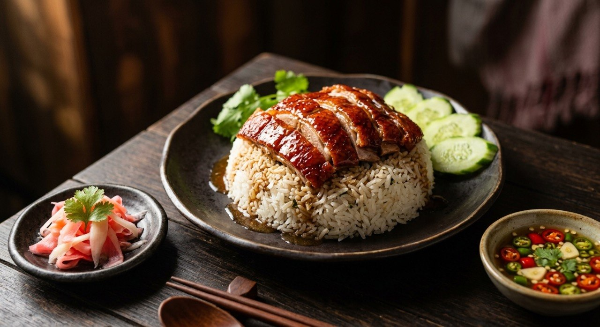

Five-spice duck, braised or roasted, sliced over rice and drowned in a sweet gravy made with its own drippings — the Chinatown lunch.

ข้าวหน้าเป็ด — "duck over rice" — is the Chinese-Thai rice shop's flagship, and the sources split it three ways before they even get to the plate. Kapook's version is เป็ดพะโล้, the five-spice braised duck: star anise, cinnamon, black pepper, coriander root and galangal simmered into a dark liquor, then the duck poached in it — exactly 20 minutes a side, because, the source warns, longer turns it to mush. The TV-show version from ครัวคุณต๋อย roasts a stuffed duck instead. And the expat recipe starts from a shop-bought roasted duck and builds the plate from there.
The gravy is the dish's signature, and Aroifin's formula is the keeper: garlic fried, five-spice and tao jiao after it, sugar and soy, water — then the secret, a spoon of the duck's own roasting drippings and sesame oil, thickened with cornstarch to a gloss. The taste target is stated in order: sweet first, then a mild salt.
On the side, the standard accompaniments: pickled ginger to cut the fat, and the chilli-vinegar dip — Aroifin's is vinegar, sugar, salt and dark soy boiled, with sliced green and yellow chillies stirred in once it's cool. The TrueID stall version runs the same sauce red.
| Thai | English | Amount |
|---|---|---|
| เป็ดสด | Whole duck | 1 |
| กระเทียม | Garlic | 1 large head |
| โป๊ยกั๊ก | Star anise | 5–6 |
| อบเชย | Cinnamon sticks | 4–5 |
| พริกไทยดำ | Black peppercorns | ¼ cup |
| รากผักชี / ข่าแก่ | Coriander roots / galangal | 2–3 / 2 pieces |
| น้ำตาลปี๊บ | Palm sugar | 1 cup |
| ผงพะโล้ | Five-spice powder | 2 tbsp |
| น้ำมันหอย | Oyster sauce | 1 cup |
| ซีอิ๊วขาว / ซีอิ๊วดำหวาน | White soy / sweet dark soy | 1 cup / ½ cup |
| ซอสปรุงรส / เหล้าจีน | Seasoning sauce / Chinese wine | ⅓ cup each |
The gravy (Aroifin): 1 tbsp garlic, 1½ tbsp tao jiao, 1 tbsp five-spice, 2–3 tbsp sugar, 2 tsp each seasoning sauce and white soy, salt, 2 tbsp cornstarch, 1 tbsp sesame oil, 1 tbsp duck drippings, 2 cups water. The dip: vinegar, sugar, salt and dark soy boiled, green and yellow chillies stirred in when cool.
Braised or roasted. Kapook braises the duck in five-spice liquor; ครัวคุณต๋อย roasts a stuffed duck; the expat version buys it roasted. The plate works with any of the three — the gravy does the unifying.
The sauce. Aroifin's gravy is a thickened five-spice sauce with tao jiao and duck drippings; the TrueID stall version is a thinner dark soy-vinegar-sugar sauce. Both sweet-dark; the thickened one clings, the thin one soaks.
Chillies in the dip. Aroifin stirs green and yellow chillies into the cooled dip; the stall version uses red. Colour is the only argument.
Duck selection. The sources advise picking duck by skin colour — white not darkened — and firm tight flesh. The ครัวคุณต๋อย recipe specifies a 2.5 kg bird for four to seven people.
Rest or serve straight. Kapook lifts the duck and rests it before slicing; the stall serves straight from the pot. Resting keeps the slices clean.
This recipe is translated from the following Thai-language sources. Where they disagree, we've said so.
1. Kapook — "วิธีทำเป็ดพะโล้ สูตรตุ๋นยาจีนพร้อมน้ำจิ้มรสเด็ด" (the braised duck used here) — cooking.kapook.com
2. Aroifin — "วิธีทำ ข้าวหน้าเป็ด พร้อมน้ำราดรสเด็ด อร่อยง่าย ๆ สไตล์เหลา" (the gravy and dip, Sep 2025) — aroifin.com
3. TrueID — "แจกสูตร ข้าวหน้าเป็ด เมนูทำขาย พร้อมตารางคำนวณต้นทุน" (stall version + cost table) — food.trueid.net
4. ครัวคุณต๋อย (TV) — "ข้าวหน้าเป็ด" (the stuffed roast-duck version, 4–7 people) — kruakhuntoi.com